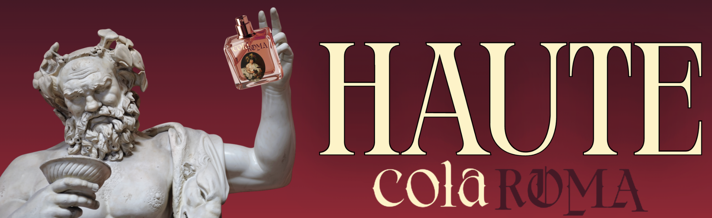
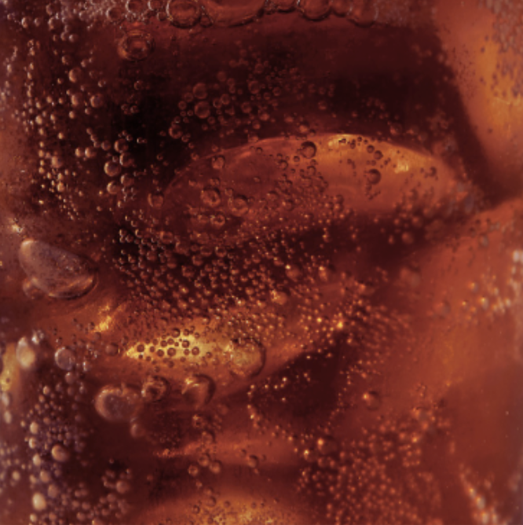
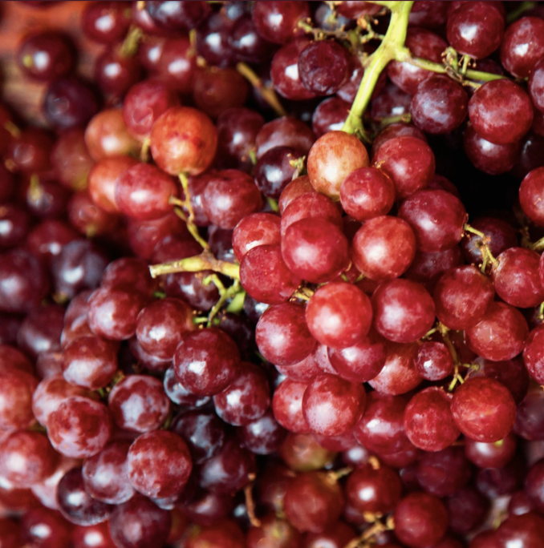

COCA-COLA
We are thrilled to announce this scent, and it would not have been possible without our partnership with Coca-Cola®. Coca-Cola was officially founded in 1892, and throughout the years, Coca-Cola's branding has consisted of various aesthetics, whether it's picniccore, vintage, or dark summer aesthetic--This was our goal for Colaroma, to be able to combine such aesthetics that regularly contradict each other, into one bottle, one scent profile, and one unforgettable masterpiece. Additionally, Coca-cola's scent profile has always been distinct, and enjoyed by many. We hope you enjoy this scent just as much as you might enjoy a sip of Coca-Cola on a warm summer day!
BACCHUS
If Bacchus, the Roman god of wine and festive revelry were to roam this planet today, undoubtedly, he'd be the biggest fan of coca-cola. This connection between the two shaped this scent with great influence. The fragrance is built around sweet spices and caramel. The top notes are a quick and subtle bitter citrus dew, which provides more dimension rather than overwhelming sweetness, also providing the intial spicy and fizzy scent. The heart notes are defined by cinnamon and caramel, with a hint of vanilla. This is the peak of the coca-cola scent, though it is important to remember the hint of vanilla remains subtle in order to make sure it doesn't overpower the overall cherry-cola scent that allows it to blend in with the base notes. With this in mind, the base notes gradually shift into the wine aroma, a warm and complex blend of deep grape and cherry, and a tart yet boozy fragrance of wine fermentation.


KEY INGREDIENTS
Neroli opens the scent with the brightness of honeyed citrus, while nutmeg adds a warm woody spice to it. Tonka beans form the essential heart, supplying a rich, powdery vanilla sweetness with hints of almond. A brown sugar and caramel accord deepens the blend with caramelized warmth, balance by a kick of cinnamon. To blend the heart notes seamlessly with the base notes, we added a maraschino accord to find balance with sweetness and tart. Following this, fermented cherry filtrate and fermented grape terpenes builds the final rich, boozy fruitiness, as well as acting as a enhancer to provide the fragrance a more dimensional, wine-like edge. Finally, we added ambergris, a substance produced in the digestive system of sperm whales that is known for being a rare, effective fixative that helps perfume scents last longer.